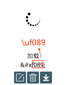

开发 QRN 项目
配置开发环境
首先需要配置开发环境，在手机或模拟器中安装客户端并配置好开发工具，请参考 开发工具 中的详细说明。
开发建议
在配置完环境之后，就可以愉快的开始Coding了。
- 在
RN的基础上，QRN新增和修改了许多 基础组件 和 API。 - 为了更流程的开发，
QRN提供了增强的框架 QRN-Ext。内容包括： - 调试方面，推荐使用 chrome调试 或 Atom调试
- 编程规范在 这里
最重要的是，我们有Demo哦！Demo在这儿
静态资源的使用
在项目的 ./src/scripts/assets 文件夹中有 QFontSet.js 和 QImageSet.js 两个文件，分别用来注册字体和图片资源的，只有在这两个文件中注册过的静态资源才能被打包工具打包。

字体示例
<Text style={{fontFamily:'hybridId_font1'}}>{'\uf089'}</Text>
字体使用注意事项
- 上图中的
hybridId_font1和hybridId_font2指的是字体文件本身的font-name，也是在项目中使用时的fontFamily。这个名称必须以hybridid_开头，否则打包文件会报错。 - 可以使用 iconfont服务 来创建项目字体，每个字体项目生成的字体文件的font-name就是对应的项目名。
字体icon的编码是这么转化来的：

图片示例
<Image style={{height: 800, width: 600}} source={{uri: require('QImageSet').img1}} />
Coding之后，可以进入测试发布环节了。